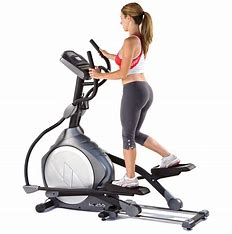
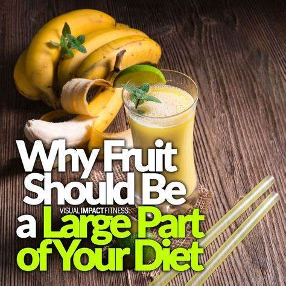

-
1. Pizza Plank Challenge:
Instructions: Hold a plank position for 30 seconds to 1 minute.Pairing: While planking, imagine creating a perfectly balanced pizza with your favorite healthy toppings.
-
2. Pasta Squat and Lift:
Squats with overhead press (use water bottles or light weights).Perform squats while lifting your chosen weights overhead.Visualize lifting a pot of cooked whole-grain pasta with your favorite veggies.
-
3.Risotto Balance Exercise:
Balance exercises (stand on one leg).Improve balance by standing on one leg for 30 seconds on each leg.Picture yourself gracefully stirring a pot of creamy risotto.
-
4. Italian Spice Lunges:
Add a twist by incorporating side-to-side lunges, mimicking the motion of sprinkling Italian spices.Think of the rich aroma of Italian herbs while lunging.
-

The best option
A balanced diet that includes a variety of nutrient-dense foods is crucial for overall health. Emphasize a large part of your diet with whole grains, colorful fruits and vegetables, lean proteins, and healthy fats to ensure you receive a diverse range of essential nutrients for optimal well-being.
- 
Program exercises
Incorporating regular exercise into our daily routine is crucial for overall health as it helps maintain a healthy weight, strengthens muscles and bones, and improves cardiovascular fitness. Exercise also plays a key role in managing stress, enhancing mental well-being, and reducing the risk of chronic diseases, making it an essential component of a balanced and wholesome lifestyle.
- 
Why fruits?
Fruits should constitute a large part of our diet due to their rich nutritional profile, providing essential vitamins, minerals, fiber, and antioxidants. Incorporating a variety of fruits supports overall health, boosts immune function, and contributes to disease prevention, promoting a well-rounded and balanced diet.
-

Healthy eating
Healthy eating should be a significant part of our diet because it plays a crucial role in maintaining overall well-being. A nutritious diet provides essential nutrients, supports optimal physical and mental health, boosts energy levels, and reduces the risk of chronic diseases, fostering a balanced and fulfilling lifestyle.